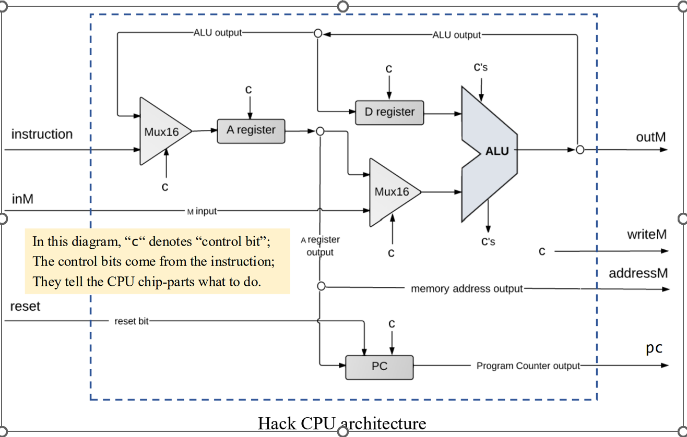
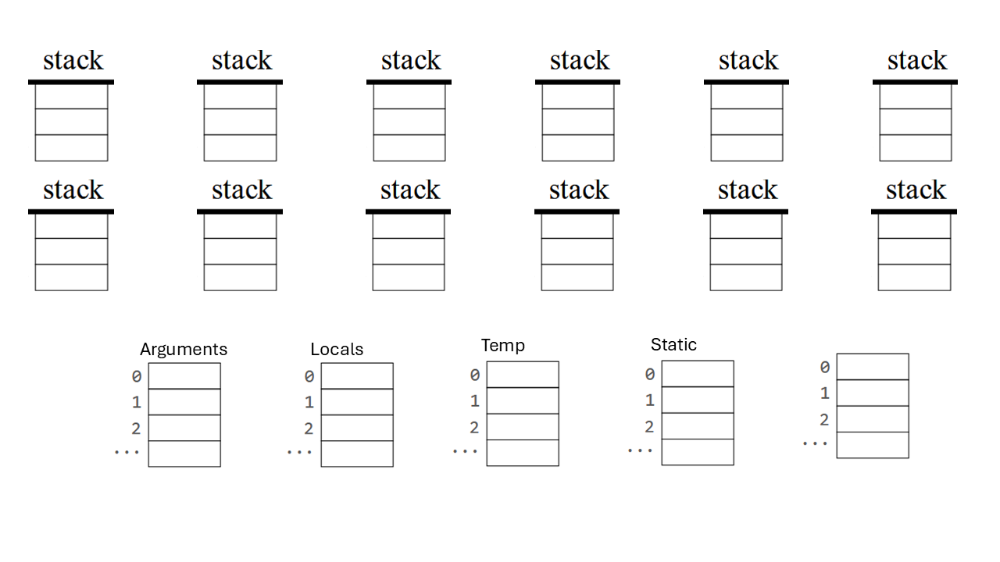
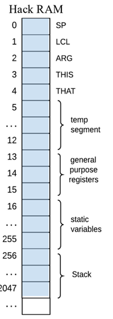

Study Guide - Midterm 02
Midterms are closed book. You can bring one written cheat sheet. 80 minutes in class.
Topics:
-
C/C++ programming: using built-in data structures and working with strings
-
Machine code, How instruction bits link to hardware control signals
-
Hack Assembly, converting from assembly to machine code
-
Virtual machine language, virtual memory segments, stack-based program evaluation, RAM data layouts, function calling
-
Compilation: symbol tables, tokenization and grammars, generating code
Short answer
-
What is the largest constant that the Hack hardware supports? Why?
-
How are abstractions important for building computing systems? Give an example.
-
How does Hack machine code map to the hardware architecture?
-
The instruction
@Ddoes not work in Hack assembly. How would the architecture need to change to support this instruction? -
What are the steps that compile Jack programs into machine code?
-
Give examples of program syntax that exists in Jack but not typically in other languages. Why are these features in Jack?
-
Why must we prepend the filename to global variables when we convert from VM code to assembly?
-
Assembly languages do not have data types. How are different data types (int, boolean, char) handled in the Hack architecture? How are classes and arrays handled in the Hack architecture.
-
Describe the steps necessary for calling and returning from a function. How is calling a method on a class object different from calling a function?
-
What is the scope of local variables? Of field variables? Of global variables?
-
How are memory layouts handled for objects an arrays in the Hack virtual machine? How does this design simplify the implementation of the compiler?
-
How are variable names resolved when compiling statements?
-
What is nested scoping?
C/C++ programming
Extend the following program to load a file containing Hack machine code instructions, one per line, into a vector. Then write code that prints the contents of the vector.
struct Instruction
{
unsigned char[16] bits;
};
int main()
{
char buff[1024];
std::vector<Instruction> instructions;
FILE* fp = open("test.hack", "r");
while (fgets(buff, 1024, fp))
{
// buff contains the current line, e.g. 00111111010101100
// assume there are no spaces or comments
// assume that the line only contains 0's or 1's
// 1. parse the contents of each line into an Instruction and add them to instructions
}
fclose(fp);
// 2. print out the contents of instructions
return 0;
}Machine Code
-
Convert the following instructions to machine instructions
-
@9
-
D; JLT
-
M=D+1
-

-
Below is a diagram of the Hack architecture with control signals represented by the character c. Show how the bits of the A-instruction, such as @9, correspond to control bits for the Hack architecture.

-
Below is a diagram of the Hack architecture with control signals represented by the character c. Show how the bits of the C-instruction, M=D+1, correspond to control bits for the Hack architecture.
Assembly
Convert the following VM code to assembly.
push constant 1
push local 0
add
pop local 0Consider the following assembly program. Show how the symbols and labels would be mapped to values by the assembler.
@mystery
A=M
D=M
@IF_TRUE1
D;JNE
@IF_FALSE1
0;JMP
(IF_TRUE1)
@i
D=A
@SP
A=M
M=D
(IF_FALSE1)
@SP
M=M+1Below, construct the symbol table for the previous assembly program.
Name |
Value |
Name |
Value |
Name |
Value |
Name |
Value |
R0 |
0 |
R7 |
7 |
SP |
0 |
||
R1 |
1 |
R8 |
8 |
LCL |
1 |
||
R2 |
2 |
R9 |
9 |
ARGS |
2 |
||
R3 |
3 |
R10 |
10 |
THIS |
3 |
||
R4 |
4 |
R11 |
11 |
THAT |
4 |
||
R5 |
5 |
R12 |
12 |
R14 |
14 |
||
R6 |
6 |
R13 |
13 |
R15 |
15 |
Virtual Machine
Convert the following expression to VM Code: d = (2-x) + (y + 9). Then show how this code would execute on the Hack virtual machine.

Convert the following expression to VM Code: (2-x) < (y + 9). Then show how this code would execute on the Hack virtual machine.
Convert the following code segment to Hack VM code. Then show how the values would be mapped to RAM.
static int global = 0;
function void foo(int a)
{
var int b;
let b = 5;
global = a + 5;
}
Convert the following function to Hack VM Code.
function int mult(int x, int y) {
var int sum;
let sum = 0;
let j = y;
while (j != 0) {
let sum += x;
let j = j - 1;
}
return sum;
}Compilation
For the following code segment:
-
Give the list of tokens and token types for the implementation of foo(). You do not need to include the class and function declaration.
-
Generate the parse tree based on the Jack Grammar.
-
Write pseudocode that compiles
Letstatements using a recursive descent parsing algorithm.
class Test
{
function void foo() {
let a = Keyboard.readInt();
if (a < 10)
{
do Output.printString("Too small!");
}
}
}| You will be given the grammar for any parse tree you are asked to write on an exam. For practice, please use the chart in your book. |
-
Which of the following strings are valid for the following grammar?
root: x | a
x : (ab)*-
a -
`` (empty string)
-
abababa -
ababab -
baa
Convert the following expression to a parse tree and give its postfix notation: 3 + 7 / 2.
Give the class-level and subroutine-level symbol tables for the following method.
class Point {
field int x, y;
static int pointCount;
...
method int distance(Point other) {
var int dx, dy;
let dx = x - other.getx();
let dy = y - other.gety();
return Math.sqrt((dx*dx) + (dy*dy));
}
...
}